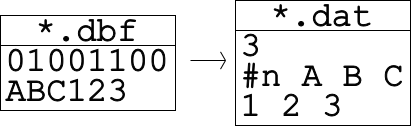
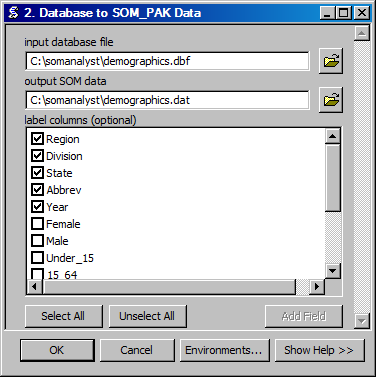

Database File to SOM Data File
Creates a SOM data file from a database file.

ArcGIS Reference

Parameters
- input database file
- The input database data file.
- output SOM data file
- The output SOM data in the SOM_PAK format.
- label columns
- An optional mode that treats selected columns as labels.
Code Reference
-
uiDBFtoDAT.DBFtoDAT(inName, labels, outName)
Creates a SOM data file from the input datbase file.
| Arguments : |
- inName
The input filename.
- labels
The column headers for the label columns.
- outName
The output filename.
|
|---|